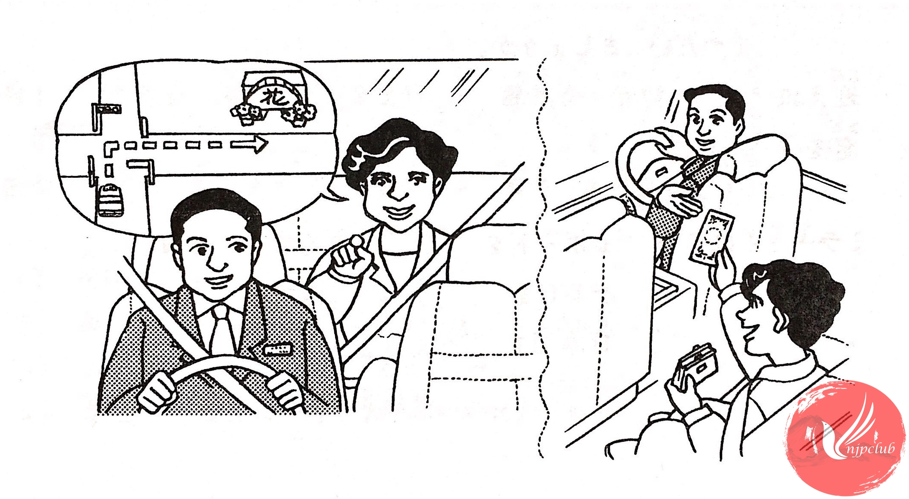

| カリナ： |
梅田まで お願いします。 |
| 運転手： |
はい。 |
| ‐ ‐ ‐ ‐ ‐ ‐ ‐ ‐ ‐ ‐ ‐ ‐ ‐ ‐ ‐ ‐ | |
| カリナ： |
すみません。 あの 信号を 右へ 曲がって ください。 |
| 運転手： |
右ですね。 |
| カリナ： |
ええ。 |
| ‐ ‐ ‐ ‐ ‐ ‐ ‐ ‐ ‐ ‐ ‐ ‐ ‐ ‐ ‐ ‐ | |
| 運転手： |
まっすぐですか。 |
| カリナ： |
ええ、まっすぐ 行って ください。 |
| ‐ ‐ ‐ ‐ ‐ ‐ ‐ ‐ ‐ ‐ ‐ ‐ ‐ ‐ ‐ ‐ | |
| カリナ： |
あの 花屋の 前で 止めて ください。 |
| 運転手： |
はい。 1,800円です。 |
| カリナ： |
これで お願いします。 |
| 運転手： |
3,200円の お釣りです。ありがとう ございました。 |